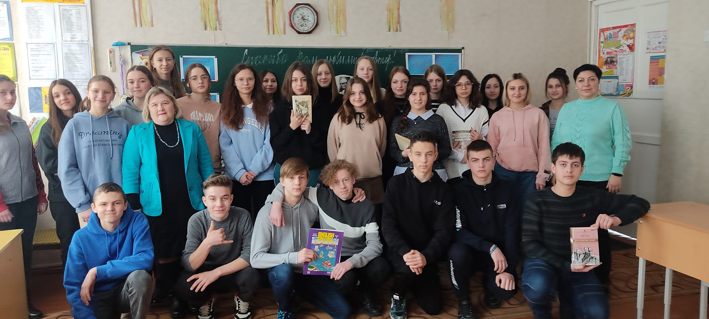

Живая классика
Конкурс "Живая классика" - волнующий и увлекательный мир, который
оживает каждый год в школе Георгия Победоносца. Организатором этого
захватывающего мероприятия является Ирина Волкова, учитель
литературы, которая с огромной страстью и любовью вдохновляет
учеников на изучение классических произведений и проявление своих
творческих способностей.
Читать далее

Шедевры для крылатых
Конкурс "Шедевры для крылатых" в школе Георгия Победоносца
представляет увлекательные конкурсы, организованные Ириной Кривой,
учителем биологии и поклонником пернатых. В рамках этих конкурсов
ученики имеют возможность не только расширить свои знания о птицах,
но и проявить свою творческую натуру, создавая уникальные и
функциональные скворечники для пернатых обитателей.
Читать далее

Путешествие в англоязычный мир
Конкурс "Путешествие в англоязычный мир" в школе Георгия Победоносца
представляет захватывающие конкурсы, организованные учителями
английского языка. Эти соревнования призваны погрузить учащихся в
атмосферу английского языка, расширить их лексический запас, развить
навыки общения и уверенность в себе.
Читать далее

Голоса книг
"Голоса книг" - захватывающие конкурсы, организованные Ириной
Волковой, учителем русского языка и литературы, в школе Георгия
Победоносца. Участники этих соревнований улучшают свои навыки чтения
вслух, артикуляции и актерского мастерства. Конкурсы позволяют
проявить творческий потенциал и погрузиться в увлекательный мир
русской литературы.
Читать далее